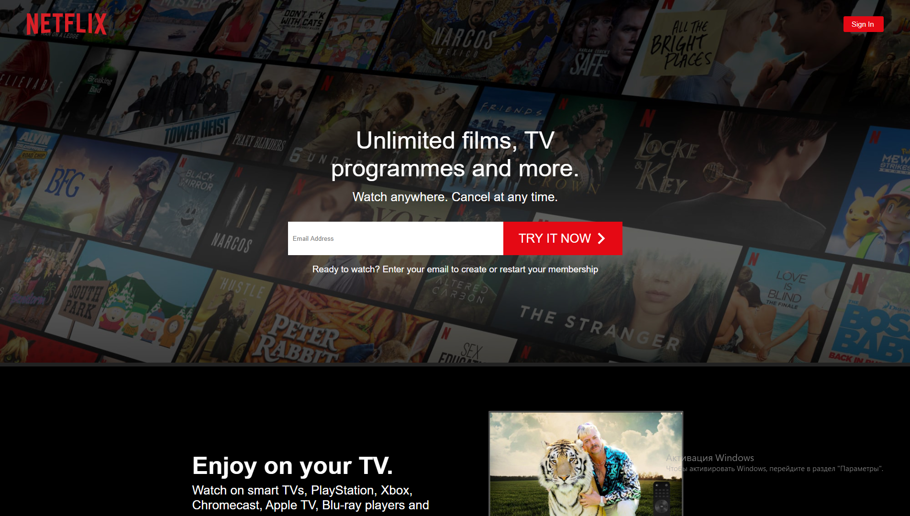

React
Учебный проект клона сайта Netflix
Проект создан полностью React на основе функциональных компонентов, стилизация осуществлялась с помощью styled-components. Информация о сериалах и фильмах загружается в проект из базы данных Cloud FireStore через облачный сервис firebase. Также с помощью firebase осуществляется и аутентификация пользователя на сайте. Сайт выполнен в двух разрешениях: для мобильных устройств и для больших вьюпортов. Проект состоит из четырех страниц, переключение между которыми осуществляется через react-router-dom. Так же в проекте есть поиск, реализованный с помощью Fuse.js, который показывает категорию с необходимым фильмом.
На главной странице реализована секция FAQ, открытие и закрытие вопросов в которой осуществляется благодаря хуку useState. На странице регистрации, sign up, форма, которую необходимо заполнить для аутентификации на странице входа, sign in. После входа появляется страница выбора текущего пользователя (так как на Netflix можно использовать семейные аккаунты). В данном проекте пользователь всего один. Страница выбора пользователя - это простой оверлей страницы поиска фильмов, которые исчезает после выбора профиля. На странице поиска фильмов можно переключаться между сериалами и фильмами, а также искать нужный фильм через поиск (реализован поиск только по категориям). При нажатии на интересующий фильм или сериал появляется его карточка с информацией и плеер со стоковым видео